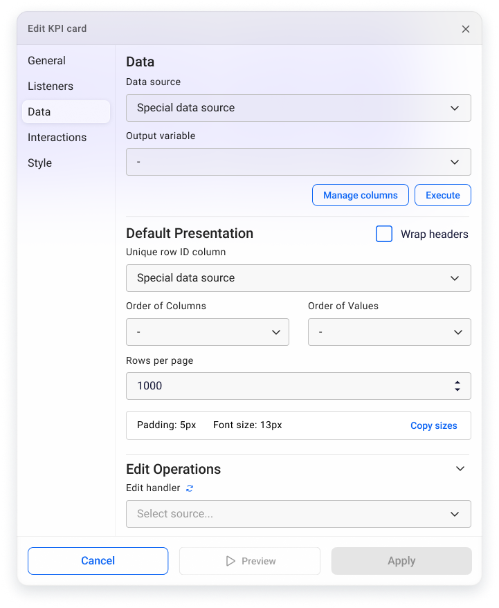
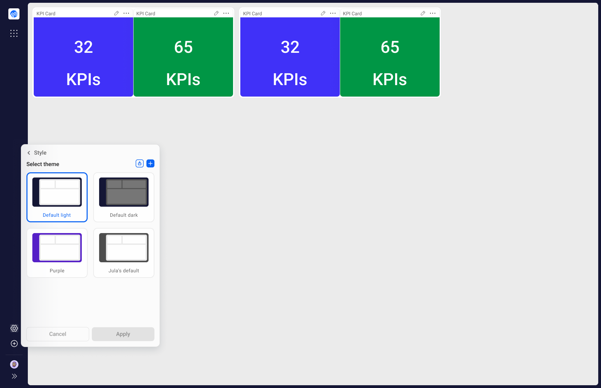

Portal Connect Dashboard Designer
Transforming a beloved but aging dashboard designer into a modern, web-based product, improving the configuration experience from the ground up and giving end-users a navigation they'd actually enjoy using.

Portal Connect is the web-based evolution of Novacura's Portal Classic, a powerful dashboard designer that lets developers build everything from data dashboards to fully navigable, interactive "mini-websites" for their end-users. It's part of Novacura's broader transition from a Windows-based product to a modern, multitenant web platform.
When I joined the project, the foundational work had already begun. My focus was on two areas that were holding the product back the most: the portlet configuration experience, which was architecturally confusing and frustrating to use, and the navigation and branding layer, which was making it hard for customers to deliver polished, usable portals to their end-users.
Problem statement
Developers building in Portal were losing time and patience navigating a chaotic configuration panel that would disappear unexpectedly and offered no clear structure. At the same time, the end-user navigation was clunky, hard to brand, and felt a decade behind what customers expected. How do we fix both without disrupting the workflows developers already rely on?
Outcome
The redesigned configuration experience received a 100% positive response in user testing, with users finding it faster, clearer, and far less intrusive. The navigation and branding overhaul was met with overwhelming enthusiasm from customers, stakeholders, and management alike. Since the changes shipped, demand and usage of Portal has grown significantly.
Coming in to Own the Hardest Problems
I didn't start Portal Connect from scratch; another designer laid the early groundwork. But when I stepped in, I took full ownership of two of the product's most critical and most broken experiences: the configuration architecture and the end-user navigation system.
This meant going deep on research, running usability sessions, driving design decisions, and working closely with developers to make sure the final product matched the intended quality. It also meant being the user's advocate in every tradeoff conversation along the way.

Listening Before Redesigning
Before touching anything, I needed to understand exactly where the pain was coming from and why it had persisted. Through user interviews and usability sessions, two patterns emerged clearly.
A configuration panel that fought back
Users described the side panel as unpredictable. It would vanish whenever they accidentally hovered outside it, forcing them to click awkwardly at the screen edge to bring it back. A "pin" option existed, but using it meant sacrificing a large portion of their visible workspace. Beyond the panel behaviour itself, the configuration IA was a mess: one long, scrolling page with loose groupings. Users told us things like "if I stop using Portal for a month, I completely forget where everything is."
A navigation experience stuck in the past
On the navigation side, the feedback was consistent: it felt outdated, it was difficult to brand, and the micro-interactions made it hard to use. The hover-based tab navigation caused real friction — elements would appear and disappear unpredictably, and moving between pages required hovering at just the right edge of the screen with frustratingly little feedback.
Two Decisions That Changed the Product
Floating, context-aware configuration
I replaced the intrusive side panel with a floating configuration window that appears directly beside the portlet being edited. Rather than covering the canvas or disappearing on hover, the window stays anchored to its portlet and uses subtle transparency so developers never lose sight of what they're working on. I also restructured the configuration IA entirely, replacing the endless scroll with a tabbed left-side panel that groups settings logically. Users now know exactly where to look, even if they haven't opened the panel in weeks.

A navigation system built for real products
For the navigation redesign, I took inspiration from modern browsers and created a persistent navigation bar that frames the entire dashboard, giving it a clear and stable identity. I replaced unpredictable hover interactions with intentional horizontal scrolling and explicit navigation arrows, making it obvious when and how to move between pages. I also reworked the side navigation to properly support subgroups and clear active states. And to address the branding gap, I built the system to let customers' colors and visual identity shine through — so their Portal actually looks like their product.

Impact & Results
100% positive response to the new configuration panel
Every user we tested with responded positively to the floating configuration window. Users found it non-intrusive, predictable, and much closer to what they expected when clicking the edit button.
Faster, more confident configuration
Most users were able to find the settings they were looking for faster and with significantly less friction. The tabbed structure replaced the mental overhead of remembering where everything lived.
Overwhelmingly positive reaction to the navigation redesign
Customers were particularly enthusiastic about the branding improvements. Many had been waiting for a way to give their portals a proper visual identity. Users noted that the product finally felt like it belonged in 2024. Management saw it as a meaningful step toward making the product easier to sell.
Demand and usage of Portal has grown since shipping
Since these changes went live, both engagement and new demand have increased noticeably — a signal that improving the experience translated directly into business value.
What I Learned
Joining mid-project is its own design challenge
Coming into a project that someone else started means inheriting decisions, constraints, and context that aren't always documented. I had to ramp up quickly, earn trust fast, and identify which battles were worth fighting — while still delivering work the team and users would be proud of.
Small interaction details have outsized impact
The hover-based navigation issues might have seemed minor on paper, but they were creating real daily frustration for end-users. It reinforced how much invisible friction accumulates in products that haven't been properly maintained — and how much goodwill you can earn by simply fixing it.
Branding is not a nice-to-have
Customers care deeply about how their product looks to their end-users. Treating the branding and visual identity system as a first-class design concern, rather than an afterthought, had a direct effect on how customers perceived the value of Portal Connect.